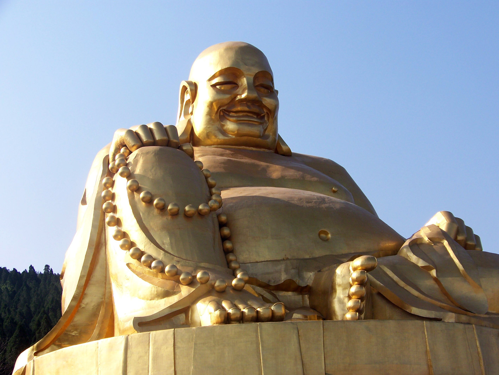

Buddha
The Buddha was once a regular person, but he spent seven weeks meditating under a tree to achieve enlightenment – a state of realization and truth that ends one’s suffering and joins himself with the universe. In Chinese mythology, he is an incredibly powerful being who, due to being one with the universe, has power that extends to the ends of the universe. In one tale in Journey to the West, he effortlessly captures Monkey, an immensely powerful being that even the Jade Emperor’s finest warriors could not capture, and traps him under a mountain for 500 years.
The Buddha is often reincarnated into new Buddhas, so he has many birthdays all of which are celebrated by Buddhists. The day of his enlightenment is also celebrated. Buddhist monks spend their days trying to reach enlightenment just like the Buddha or are Bodhisattvas – ones who have already achieved enlightenment and are helping others do the same.